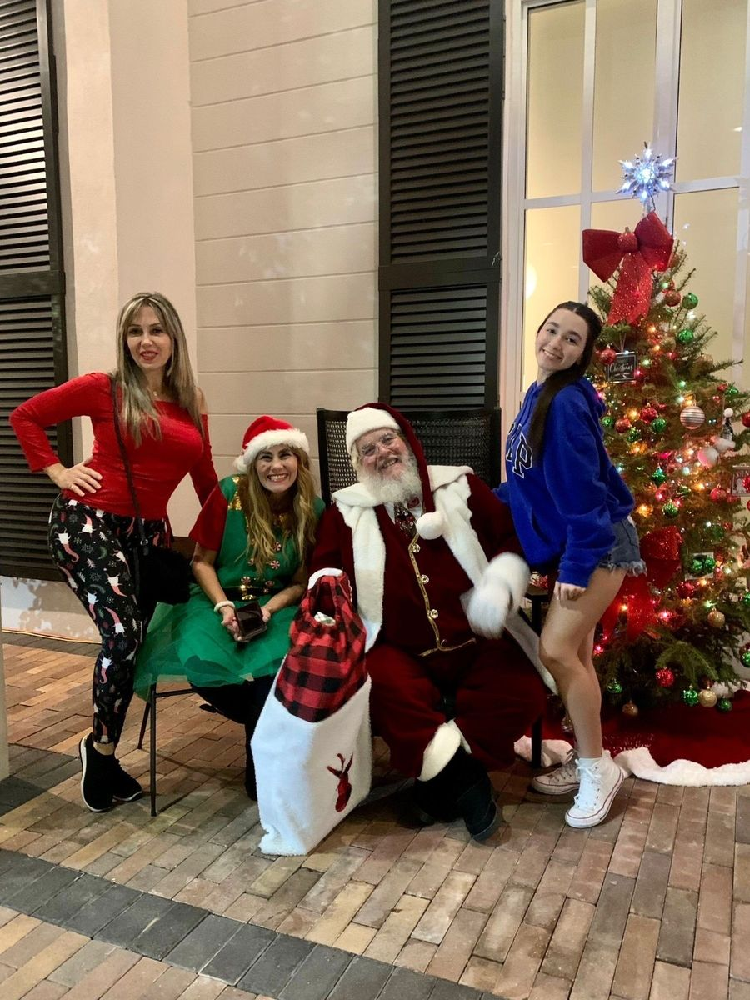

Santa Latino
La magia de la Navidad llega hasta ti.
Personaje navideño para eventos y celebraciones
Representante: Héctor Rivero
Niagara Falls, Ontario
Atención en español e inglés
Santa Latino lleva la alegría y la magia de la Navidad a familias, empresas y comunidades. Con años de experiencia representando a Santa Claus, ofrece encuentros cercanos y memorables, llenos de sonrisas, ilusión y espíritu navideño.
Desde Niagara Falls, Ontario, participa en celebraciones y eventos en diferentes lugares de Canadá, ofreciendo experiencias en español e inglés.
Santa Latino en El Podcast del Migrante
Conoce la historia de Héctor Rivero, el hombre detrás de Santa Latino, en esta entrevista especial de El Podcast del Migrante.
¿Cómo puede ayudarte Santa Latino?
- Visitas de Santa a hogares
- Fiestas infantiles y celebraciones familiares
- Fotografías y encuentros con Santa
- Eventos privados y empresariales
- Participación en actividades comunitarias
- Presentaciones navideñas en español e inglés

Disponibilidad
Desde Niagara Falls, Ontario, a celebraciones y eventos en distintas ciudades de Canadá, sujeto a disponibilidad.
- Idiomas
- Español · English
Conecta con Santa Latino
Escanea con la cámara de tu teléfono, o descarga el código para compartirlo o imprimirlo.


¿Quieres hablar con Santa Latino?
Correo: santalatinoon@gmail.com
Perfil empresarial. Verifica directamente con el profesional los servicios, condiciones y disponibilidad antes de tomar decisiones.
← Volver a Quién puede ayudarte